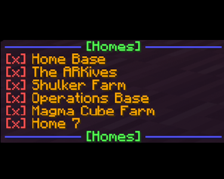
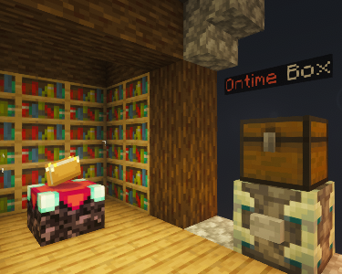
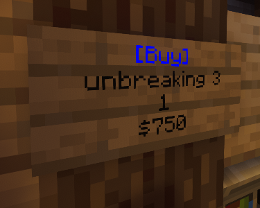

Speedy2025's Personal Projects |
|---|
Speedy's Essentials |
The Southern Empires Realm |
Sign Shops |
|---|---|---|
|
 |
 |
 |
|
A vanilla replica of the original Essentials plugin created for Bukkit/Spigot plugin servers. Currently on version 4, includes homes, hubs, and teleport requests. |
The core of Speedy2025's personal server, runs just about everything needed and manages the other parts. Includes offhand enchant, throwable fireballs, crouch jump, particle hats, and so much more! |
A faithful recreation of the Signshops plugin. Allows players to create personal item shops using signs and engage with currency. |